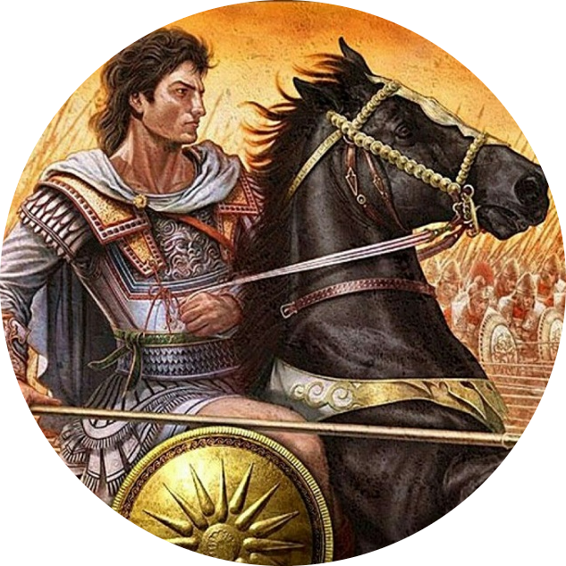

|  | üíØ3bid the GREATüíØwho exactly is he??(everyone asked!):Get in touch with me via My Contacts |
Abid is a man from Palestine,
he is Currently 20 years old and jobless,
yet he still holds his greatness due to the many achievements he managed to accomplish throughout his short living,
both academical and physical.
Alongside his must-do things in life, Abid takes interest in many hobbies, some he lost interest in and some are still done today in almost daily basis.
After graduating from high school, Abid got his first job 3 month after, during his working period he was able to make a lot of connections and excell at his job,
unfortunately this came to an end 1 year after when he had to quit in order to study well for his future.
| Date | Work | Sum |
|---|---|---|
| 2021-2022 | Worked as as a shelfer for Shufersal | ~72000 shekels |
| 1 Year | ~72000 shekels |
| Coding ⭐⭐⭐ Gaming ⭐⭐⭐⭐⭐ Training ⭐⭐⭐ |
Swimming ⭐⭐⭐⭐ Cooking ⭐⭐⭐ Functioning ⭐ |